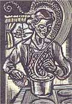
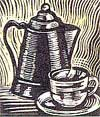
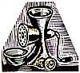

Making Do
Edna Sutherland shares recipes for homemade coffee, vegetable marrow marmalade, cucumber olives, and green tomato olives; Chad Ratliff learned stuffing high topped moccasins with newspaper prevents shrinking; Maida Rodgers recycles old calendar pictures by framing them with poems or words of wisdom.
By the Mother Earth News editors
June/July 1998
Country Lore
When times are thin, try these no-frills Canadian homestead recipes..
Almost sixty years ago, in the homestead country of northern Canada, the housewife had to make do or do without. There was no comer store in the day when supplies were ordered a few weeks in advance. There was only money for the necessities of life. No money for frills, as the men were fond of saying.
Recently, I found a dog-eared well-wom cookbook from this time, in my late mother-in-law's cupboard. It seems that a number of church ladies had gotten together, written out their recipes, and sent them to a printer, with the businessmen of the nearest town picking up the tab. The ladies sold the book and donated the money to their favorite charity.
The recipes, the cookbook guarantees, were "proven and tested," and some of them seem to have come over with a bride or two from the old country.
Those ladies must have assumed that anyone opening the book and intending to use the recipes was already an accomplished cook. Some did not even include any quantities required or baking instructions.
Those were tough times, but these ladies were nothing if not inventive. For instance, if they ran out of coffee, they could follow this resourceful recipe...
Homemade Coffee
2 cups bran
1/3 cup molasses
2/3 cup cornmeal
1/2 cup hot water
Mix thoroughly. Roast evenly in hot oven until very dark. Keep mixing while roasting. The above recipe from her cookbook says nothing about what should be done after the mixture cools. One presumes-and only presumes, mind you-that it would be put through a hand-cranked food chopper.
The following recipe for marmalade might confuse a modern cook, but it is assumed the cook of the '30s or '40s put the ingredients through her food chopper before cooking her marmalade.
Vegetable Marrow Marmalade
1 vegetable marrow
8 lemons
10 oranges
Cook until thick. Add 6 cups sugar. Cover and simmer one hour.
Another recipe contributor was very clever when she made her version of a sandwich spread. "Take some baloney," she wrote, "Put through mincer. To this mince, add a small bit of onion or any kind of pickle. Add enough salad dressing for right consistency to spread easily.
Salt and pepper to taste. Is very economical and tasty."
Olives were certainly not on everyone's shopping list, nor would the average log cabin back in the Canadian bush ever have had them in its pantry. But that did not stop women from hankering for the nicer things in life to serve their friends when they got together. And hence follows the recipe for...
Cucumber Olives
1 pint water
1 cup sugar
1/4 cup salt
1 ounce mustard seed
1 pint white vinegar
Stir above brine until dissolved. Take cucumbers and cut into small pieces the size of walnuts. Soak overnight in ice water. Drain thoroughly. Put in sterilized jars and pour brine over cold cucumbers. Seal.
Another lady used her excess tomatoes in this inventive way...
Green Tomato Olives
Pare small green tomatoes and bring them to the boiling point for 2 minutes. Then make the syrup of 2 cups of vinegar and 3 cups of brown sugar. Let it boil with some mixed spices for 5 minutes. Put the boiled tomatoes in sealers and pour the symp over. Seal tightly.
One housewife must have learned the hard way about the difficulty of cleaning burnt pans, for she followed her scalloped potatoes recipe with this advice: "the dish will be hard to clean."
The cookbook contains recipes for everything from marrow balls and Saratoga chips to liver soup. It was often left to the discretion of the cook as to the quantity that she should put up.
They made vegetable burgers (oh, yes, they did), canned mushrooms, pickled fish, and mundelen (Jewish soup-nuts). which sounded much like a modern snack food. They found time to make potato chips, decorate cakes, and serve big meals and tasty snacks. Those busy ladies were doing everything all the tune with never a moment's rest. or so it seemed. One might easily assume that there was Spartan fare on the Canadian kitchen table during the depression-but not by the looks of the recipes in this book!
- Fdna N. Sutherland
Vancouver, B.C.
Modern Moccasins
I am frequently seen, especially in the summer, sporting a pair of high-topped moccasins. I am sure there are readers out there who also wear them and understand how unfortunate it a when they get wet. Not only is it a hassle to dry, them out, but they also shrink. I have learned that if you stuff the foot with newspaper, the paper absorbs the moisture and prevents shrinking. Mine are nice and dry in a few hours.
-Chad Ratliff
Columbus, KS
Calendar Collage
How about some tips on recycling those pretty but outdated calendar pictures? You hate to throw them away, but just letting them lay there ends up creating clutter Here are a few of my ideas!
Of course, there's the tried-and-true frame-and-hang. but how about going a step further? Take several of them, along with poems and/or words of wisdom, and mat them attractively-then frame and hang. Or take a bunch and make a hodgepodge willy-nilly collage on a big piece of cardboard.
You can also frame them with pretty tape on the panes of glass from an old window or French door. Try recycling smaller ones into note cards. Or mix with beads, bells, and bows on fishing twine for a unique mobile. I just hate to throw them out!
-Maida Rodgers
Farmington, AR
|
 ILLUSTRATIONS: STEPHANIE SHIELDHOUSE |
 |
 |
 |
|
|